Plots for metabolism pathway scoring
Arguments
- srt
A Seurat object containing the results of RunMetabolism.
- res
GSVA results generated by RunGSVA function. If provided, 'srt' and 'group.by' are ignored.
- group.by
A character vector specifying the grouping variable used in RunMetabolism.
- assay_name
The name of the assay or tools slot containing metabolism results. Default is
"METABOLISM".- ...
Additional arguments passed to GSVAPlot.
Examples
data(pancreas_sub)
pancreas_sub <- standard_scop(pancreas_sub)
#> ℹ [2026-05-22 16:52:30] Start standard processing workflow...
#> ℹ [2026-05-22 16:52:31] Checking a list of <Seurat>...
#> ! [2026-05-22 16:52:31] Data 1/1 of the `srt_list` is "unknown"
#> ℹ [2026-05-22 16:52:31] Perform `NormalizeData()` with `normalization.method = 'LogNormalize'` on 1/1 of `srt_list`...
#> ℹ [2026-05-22 16:52:32] Perform `Seurat::FindVariableFeatures()` on 1/1 of `srt_list`...
#> ℹ [2026-05-22 16:52:33] Use the separate HVF from `srt_list`
#> ℹ [2026-05-22 16:52:33] Number of available HVF: 2000
#> ℹ [2026-05-22 16:52:33] Finished check
#> ℹ [2026-05-22 16:52:33] Perform `Seurat::ScaleData()`
#> ℹ [2026-05-22 16:52:33] Perform pca linear dimension reduction
#> ℹ [2026-05-22 16:52:34] Use stored estimated dimensions 1:23 for Standardpca
#> ℹ [2026-05-22 16:52:34] Perform `Seurat::FindClusters()` with `cluster_algorithm = 'louvain'` and `cluster_resolution = 0.6`
#> ℹ [2026-05-22 16:52:34] Reorder clusters...
#> ℹ [2026-05-22 16:52:34] Skip `log1p()` because `layer = data` is not "counts"
#> ℹ [2026-05-22 16:52:34] Perform umap nonlinear dimension reduction
#> ℹ [2026-05-22 16:52:34] Perform umap nonlinear dimension reduction using Standardpca (1:23)
#> ℹ [2026-05-22 16:52:39] Perform umap nonlinear dimension reduction using Standardpca (1:23)
#> ✔ [2026-05-22 16:52:43] Standard processing workflow completed
pancreas_sub <- RunMetabolism(
pancreas_sub,
db = c("KEGG", "REACTOME"),
group.by = "CellType",
species = "Mus_musculus",
method = "AUCell"
)
#> ℹ [2026-05-22 16:52:43] Start metabolism pathway scoring
#> ℹ [2026-05-22 16:52:43] Data type is raw counts
#> ℹ [2026-05-22 16:52:43] Averaging expression by "CellType" ...
#> ℹ [2026-05-22 16:52:44] Aggregated expression: 15998 genes x 5 groups
#> ℹ [2026-05-22 16:52:44] Using raw scMetabolism gene sets directly; `PrepareDB()` / BioMart-based ID rebuilding is skipped
#> ℹ [2026-05-22 16:52:44] Total metabolism gene sets to score: 127
#> ✔ [2026-05-22 16:52:44] Metabolism scores stored in tools slot "Metabolism_CellType_AUCell"
ht1 <- MetabolismPlot(
pancreas_sub,
group.by = "CellType",
plot_type = "heatmap",
topTerm = 10,
width = 1,
height = 2
)
#> Warning: Data is of class matrix. Coercing to dgCMatrix.
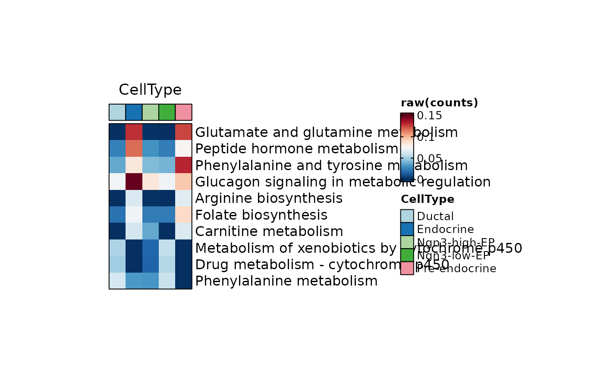
ht1$plot
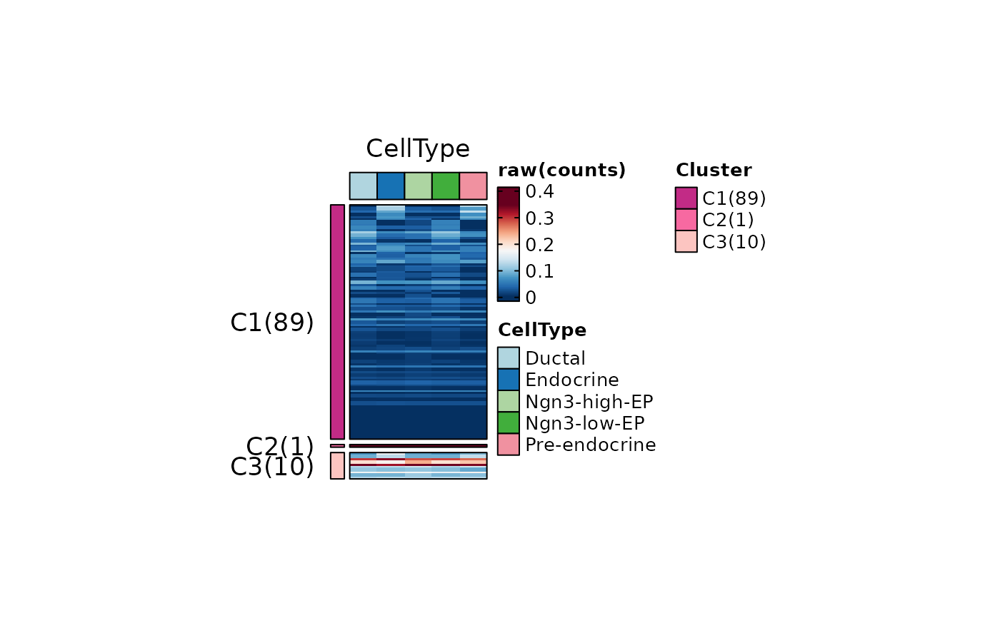
ht2 <- MetabolismPlot(
pancreas_sub,
group.by = "CellType",
plot_type = "heatmap",
n_split = 3,
topTerm = 100,
use_raster = TRUE,
width = 1,
height = 2
)
#> Warning: Data is of class matrix. Coercing to dgCMatrix.
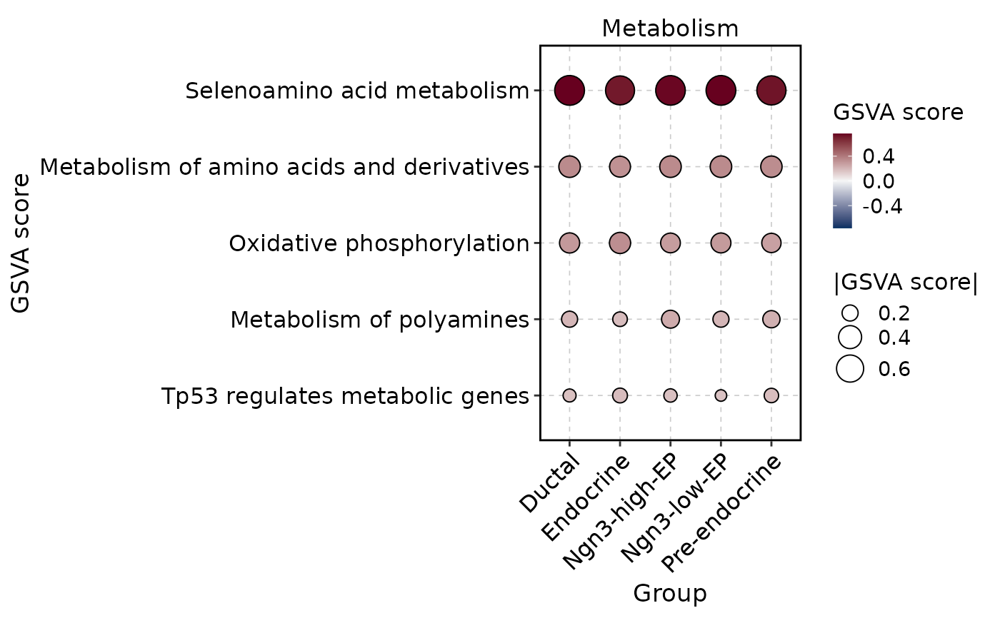
ht2$plot
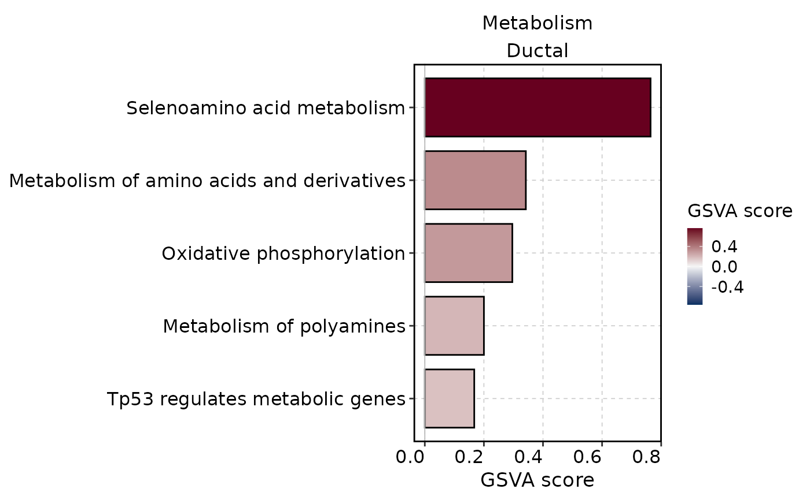
MetabolismPlot(
pancreas_sub,
group.by = "CellType",
db = "GO_BP",
plot_type = "comparison",
topTerm = 5
)
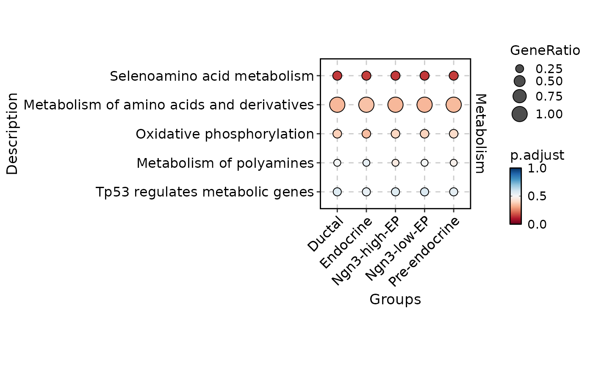
MetabolismPlot(
pancreas_sub,
group.by = "CellType",
db = "GO_BP",
group_use = "Ductal",
plot_type = "bar",
topTerm = 5
)
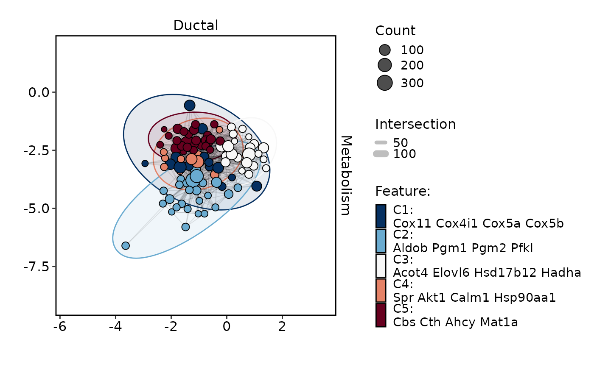
MetabolismPlot(
pancreas_sub,
group.by = "CellType",
group_use = "Ductal",
db = "GO_BP",
plot_type = "network",
topTerm = 3
)
#> ✔ [2026-05-22 16:52:50] shadowtext installed successfully
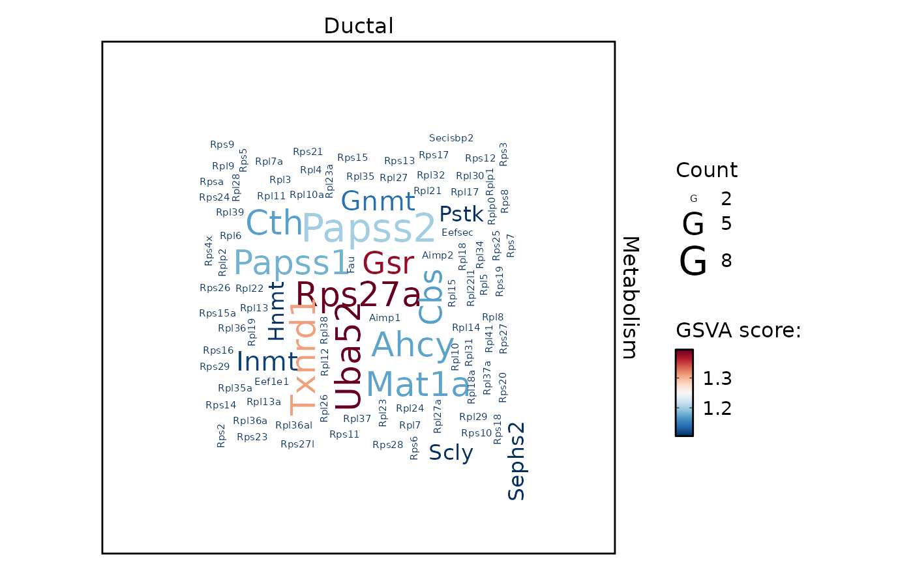
MetabolismPlot(
pancreas_sub,
group.by = "CellType",
group_use = "Ductal",
db = "GO_BP",
plot_type = "enrichmap"
)
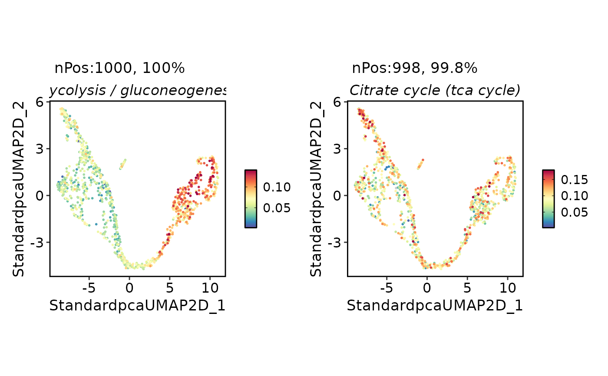
MetabolismPlot(
pancreas_sub,
group.by = "CellType",
group_use = "Ductal",
plot_type = "wordcloud",
word_type = "feature"
)
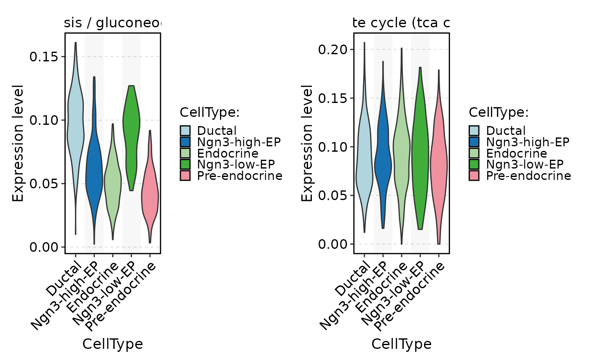
pancreas_sub <- RunMetabolism(
pancreas_sub,
assay_name = "METABOLISM",
db = c("KEGG", "REACTOME"),
species = "Mus_musculus"
)
#> ℹ [2026-05-22 16:52:55] Start metabolism pathway scoring
#> ℹ [2026-05-22 16:52:56] Data type is raw counts
#> ℹ [2026-05-22 16:52:56] Using raw scMetabolism gene sets directly; `PrepareDB()` / BioMart-based ID rebuilding is skipped
#> ℹ [2026-05-22 16:52:56] Total metabolism gene sets to score: 127
#> ✔ [2026-05-22 16:52:56] Metabolism scores stored in tools slot "Metabolism_AUCell"
#> ℹ [2026-05-22 16:52:56] Metabolism scores also stored in assay "METABOLISM"
FeatureDimPlot(
pancreas_sub,
assay = "METABOLISM",
features = rownames(pancreas_sub[["METABOLISM"]])[1:2],
reduction = "umap"
)
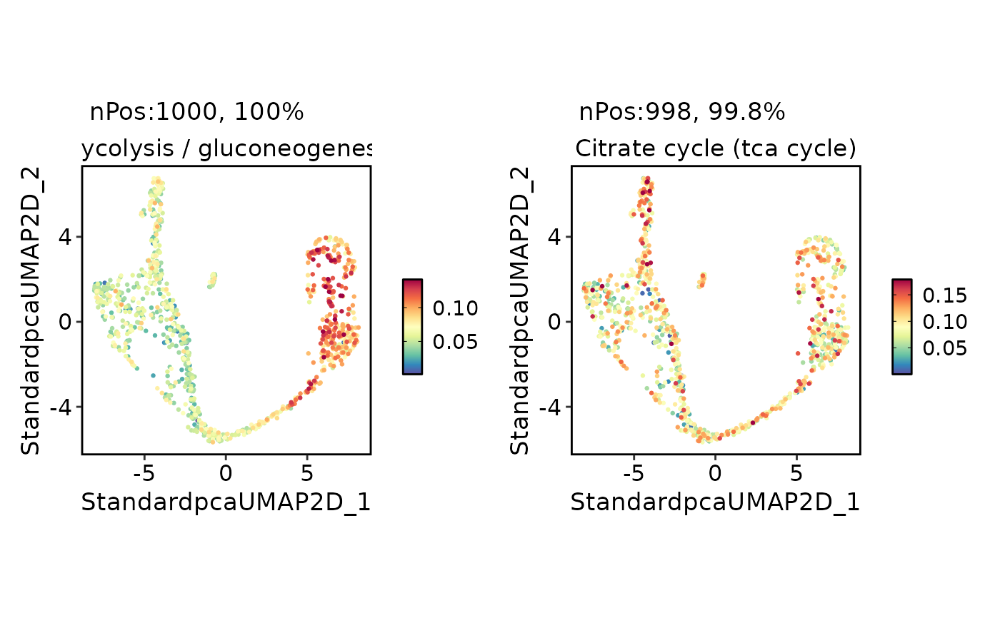
FeatureStatPlot(
pancreas_sub,
stat.by = rownames(pancreas_sub[["METABOLISM"]])[1:2],
group.by = "CellType",
assay = "METABOLISM"
)
#> Warning: No shared levels found between `names(values)` of the manual scale and the
#> data's colour values.
#> Warning: No shared levels found between `names(values)` of the manual scale and the
#> data's colour values.
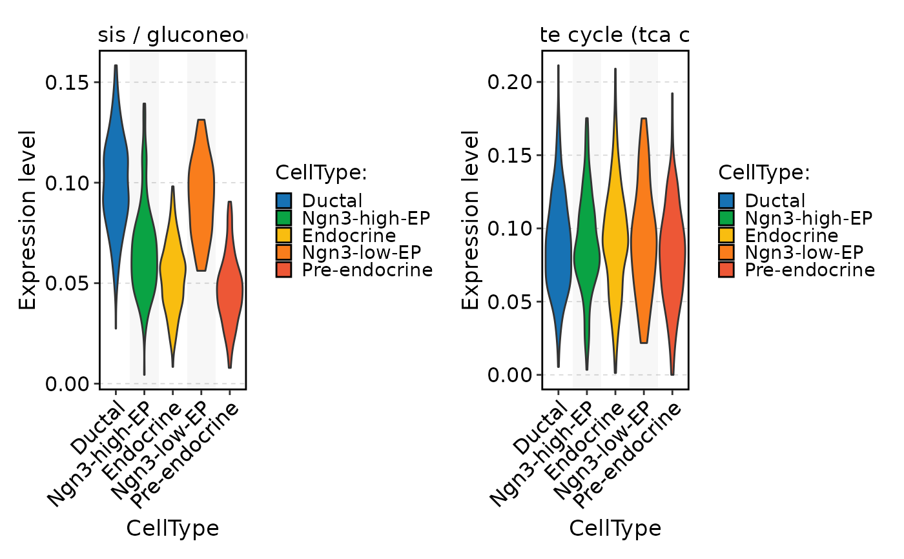
ht <- GroupHeatmap(
pancreas_sub,
exp_legend_title = "Z-score",
features = rownames(pancreas_sub[["METABOLISM"]])[1:10],
group.by = "CellType",
assay = "METABOLISM",
width = 1,
height = 2
)
#> ! [2026-05-22 16:52:57] The values in the "counts" layer are non-integer. Set the library size to "1"
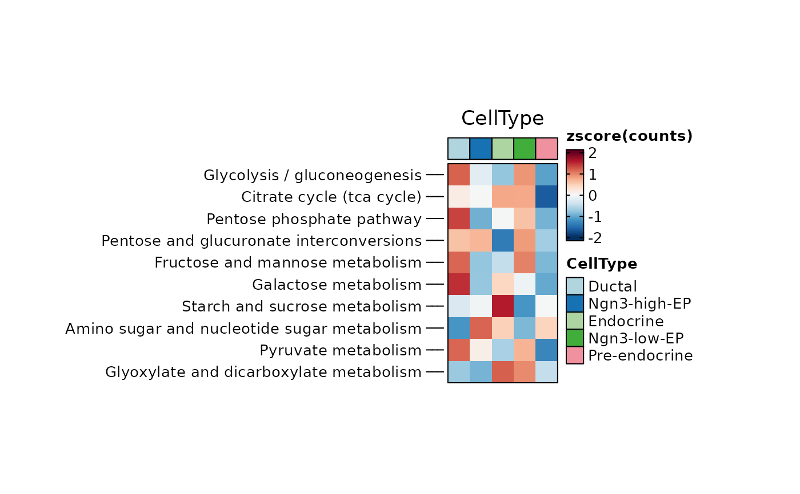